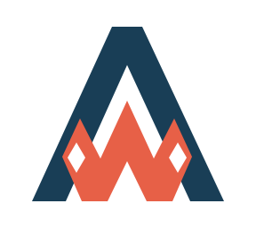
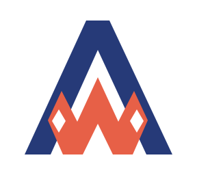

あわい / 藍 × 朱の修正版
緑みを抑えて、
藍の青みを強める。
前の濃紺から、青みが強く出る色へ変更しました。朱色と、マークの形は同じです。


Bを使って色の違いを並べています。朱色は両方とも#E76047です。
修正版
藍 × 朱
#263A78#E76047

AWAI
制作例 相談するあわい / 藍 × 朱の修正版
前の濃紺から、青みが強く出る色へ変更しました。朱色と、マークの形は同じです。


Bを使って色の違いを並べています。朱色は両方とも#E76047です。
